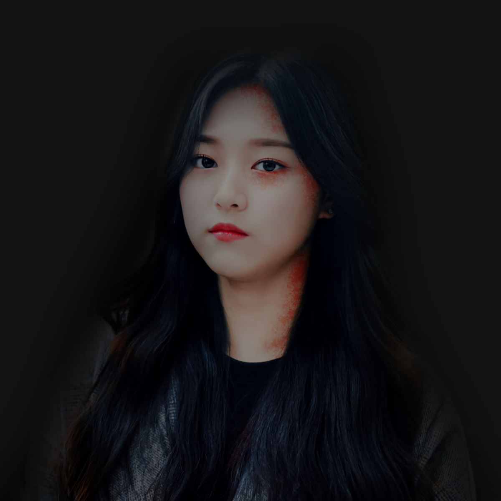
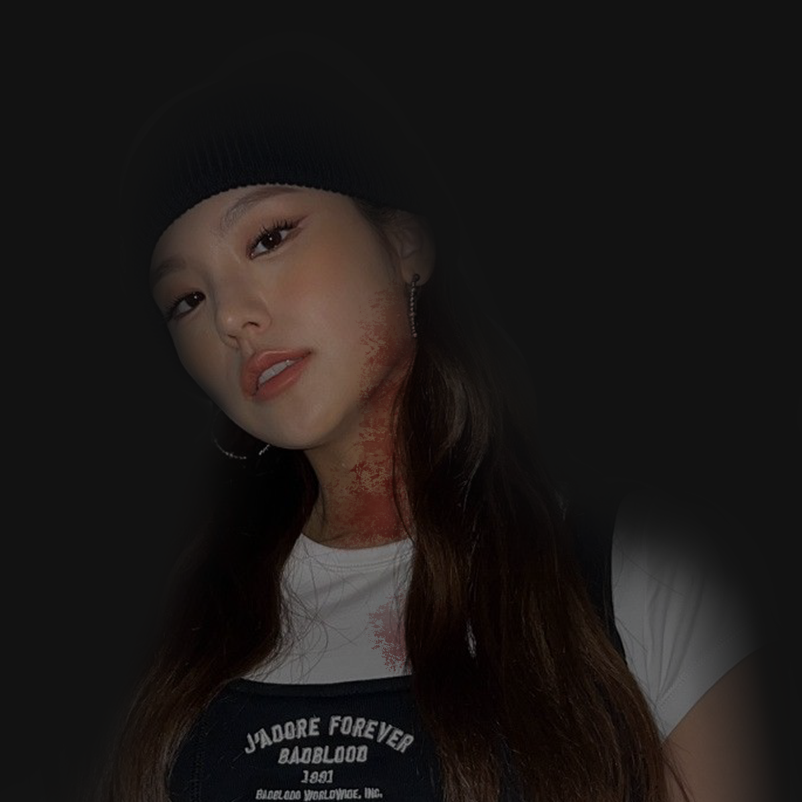
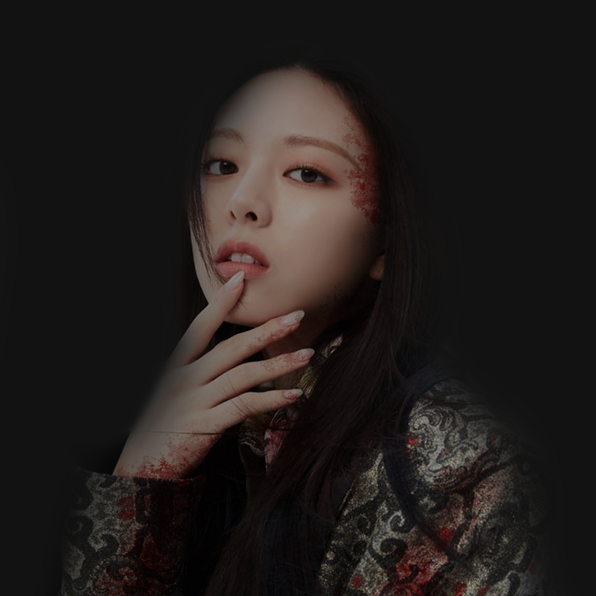
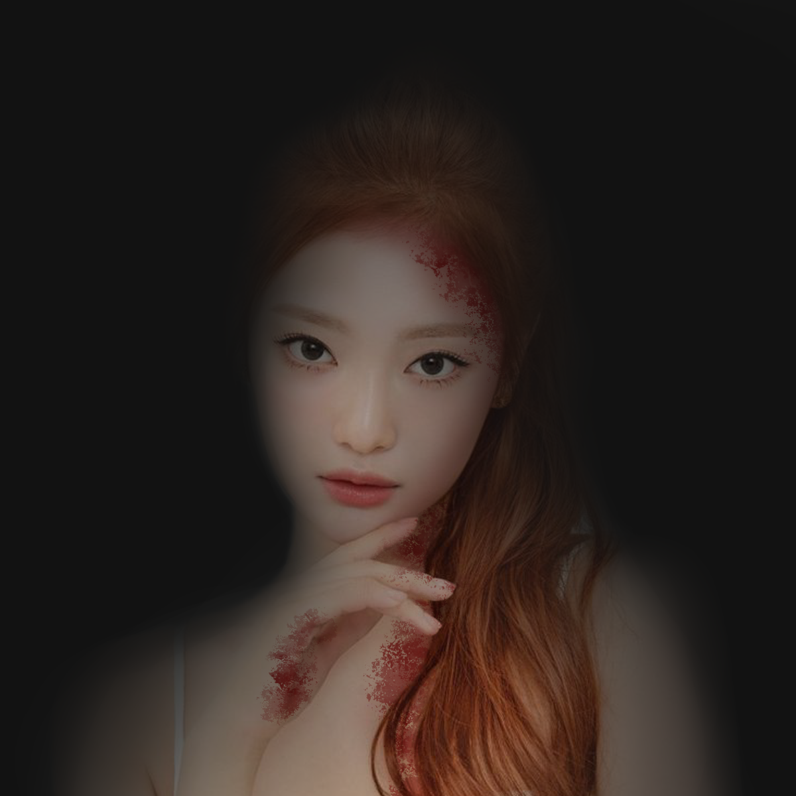
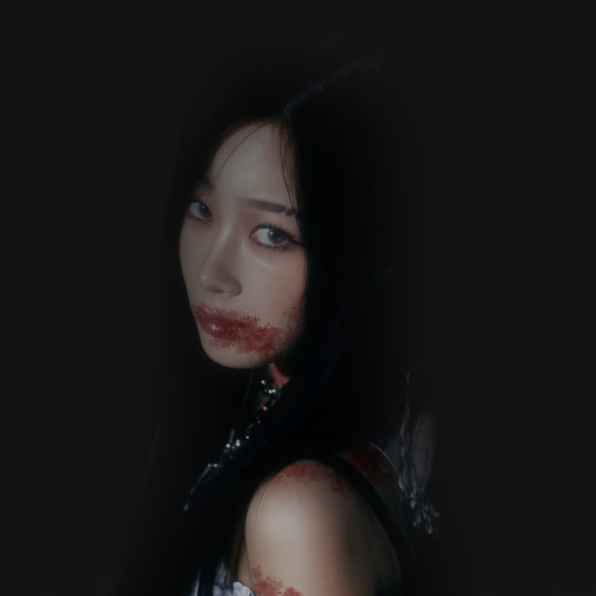

Parents neglected the girl at a very young age, the father also took advantage of her twice and constantly abused her.
Even as a teen, the girl was first taken into prison for almost brutally killing both of her parents, but was later brought inside a psychiatric institution after chopping the bodies of nine prisoners into pieces who tried to take advantage of her.
"Life is built upon the taking of another life. If you have the resolve to kill, then you have the obligation to eat."
Patient for three years with no signs of improvement.
Anything sharp is restricted——Would try and kill anyone or herself if she had the chance.
One of the most dangerous patients; Almost killed her first doctor on the first day. "Stay away from this person as much as possible," the doctor said.
Is strangely comfortable around patient 010 especially 002.
Disorders
Schizoaffective
Borderline Personality
Psychopathy (ASPD)
Psychosis
Codependent Personality
002

Kim Hyunjin
Born into a family filled with Doctors and Scientists.
Was considered a child prodigy among her family and was living a happy life. Well, not until the father imprisoned her at a young age to test his illegal medicines and was later announced missing.
A few years later, the girl was found lying down on a bed lifelessly like a corpse. Eyes were tremendously bleeding, underweight, blisters, etc.
When the father was finally in jail, the moment the girl turned thirteen years old— she visited the father's cell only to murder him along with the inmates who tried to stop her. Specifically five. After the killing, the girl's laughter echoed around the cells.
She voluntarily brought herself inside a psychiatric institution and said, "You can't spell slaughter without laughter."
Has been a patient for three years with no signs of recovery.
One of the most harmless patients inside the ward, but won't hesitate to give death threats and will actually do it if things get out of hand. "She's smart and nice, just try not to do anything that can provoke her unless you're 001 or 012." one of her victims said.
Usually seen around patient X.
Disorders
Post-traumatic Stress
Psychopathy (ASPD)
Hyper Intelligence
ADHD
Disregulation
007

Hwang Yeji
Born into a poor problematic family.
Lived with her parents for twelve years along with her younger brother who's only four years old, but was later left on the streets to starve with the brother. Due to their circumstances, the girl did her all to get food.
While out to look for food, the girl ran back to her brother in a particular abandoned home only to see him dead lying on the floor with bubbles flowing down his mouth.
No one knew what was the cause and what happened after that, but the girl was later found inside the abandoned home talking to her brother's dead body along with countless dead bodies of men surrounding her; Witnesses stated that the men she killed were predators.
"It is the role of a parent to stand in front of their children... and protect them even if their legs were to give out at any moment. But that doesn't apply to all does it?"
The girl was forcefully brought to a psychiatric institution by a group of policemen.
Most mysterious and harmless patient inside the institution. "Except you're 002 and 012, don't talk to this person unless she's the one who engaged it," Dr. Jo warned.
Prefers isolation and silence. Would only talk to; 002, 010,Dr. Jo, and Dr. Wong.
Disorders
CIPA
Paranoid Personality
Post-traumatic Stress
Antisocial Personality
Emotional Deprivation
010

Shin Yuna
Born into an average family with a happy peaceful life.
Things went downhill as soon as the girl witnessed her mother stabbing the father on the bed for cheating on her with another woman. The mother then later continuously abused her at a very young age.
Not being able to take the mother's actions, she brutally stabbed her to death with a wooden stake she found in her backyard. The girl took out her own mother's heart and crushed it into tiny bits of pieces.
"What I desire is a heart... A heart that understands emotions."
The grandmother heard the news, so she brought the girl to a psychiatric institution.
The sunshine inside the ward. Every patient would be comfortable around the girl as she constantly tries to lift their spirits. "She may look bubbly and kind but don't get swayed, she's deadly if you try to confuse her emotions," 002 warned.
If confused, the girl would repeatedly stab or punch anything she could get her hands on.
Will only calm down if left alone for a few minutes, unless you're close to her; embrace the girl tightly.
Clingy to patients 001 and 007.
Disorders
Bipolar
Psychosis
Histronic Personality
Codependent Personality
Obsessive-Compulsive
011

Ning Yizhuo
"Probably" born into a wealthy family.
The girl never explained nor had anyone explain her background. Thus, almost 90% of her profile is empty.
The girl was found behind a psychiatric institution carrying her grandmother's dead body with a bleeding head. The following day, she revealed that she was the one who killed her.
"People derive their happiness in a variety of ways, even though it might seem cruel."
Unspecified patient; Neutral, and wouldn't hesitate to try and help patients in distress. "She's similar to 010, but a bit more mindful. Just don't make her mad if you don't wanna die," Dr. Wong warned.
Often seen around the institution's garden spending time alone.
Disorders
Bipolar
Paranoid Personality
Codependent Personality
Complex PTSD
012

Uchinaga Aeri
Born into a family of illegal mercenaries.
Was forced to endure pain and take requests for the family as a child, almost died six times due to resistance of not wanting to take part in the family business.
Lepidopterophobia; Was twice tortured by locking the girl inside a room filled with moths and butterflies for twenty-four hours.
"I hate butterflies and moths. I hate them for being pretty. I hate them for being easy to catch... and having pins stuck through their body and being turned into specimens is what I hate most."
Tired of everything, the girl went berserk and killed her whole family while in their sleep. She was then found in the wild with a bunch of wolves, eating raw meat as well as the bodies of her dead family.
Was brought inside a psychiatric institution by the military that found her.
One of the most dangerous patients. "If you don't wanna get beaten to death or eaten alive, never provoke the girl nor mention butterflies and moths." 002 warned.
Avoids any contact with people, except 002 and 007. Usually hangs around Dr. Jo's office just to play games on her computer.